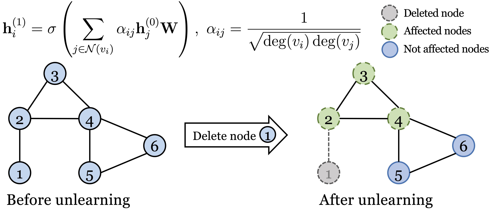
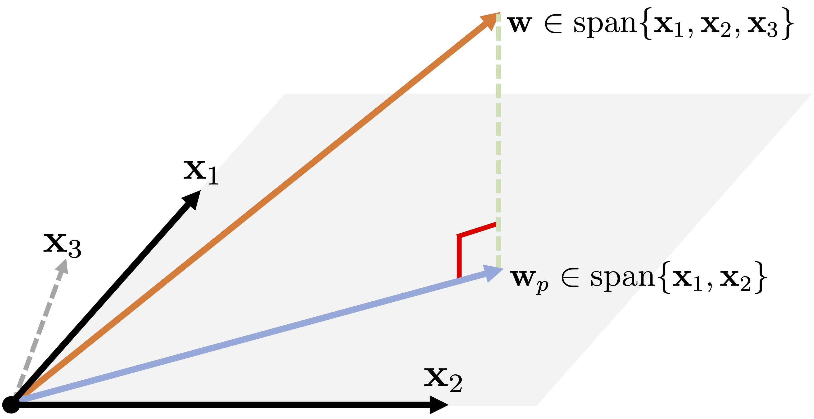

|
Weilin Cong (丛炜霖)
About me
I am a 3rd year Ph.D. candidate (since Fall 2019) of Computer Science and Engineering at The Pennsylvania State University,
under the supervision of Prof. Mehrdad Mahdavi.
I received my B.S. degree from Beijing institute of Technology.
Besides, my last name Cong (simplified 丛 / traditional 叢) is pronounced as ts-oh-ng in Pinyin 🧐
Research Interests
My research focuses on both the fundamental problems in graph representation learning (including optimization, generalization, and expressive power) and model architecture design:
Optimization: scaling graph neural network training by sampling, distributed graph neural network training, and efficient graph representation unlearning for privacy; Generalization and expressive power: understanding why GNN suffer from performance degradation when the depth go deeper; Model architecture design: design a Graph Transformer network that can efficiently solve the dynamic graph reasoning problem.
Please refer to the publications for more details.
Most recent update (05/26/2022)
Our most recent work on graph representation unlearning is available online, in which our goal is to efficiently remove the effect of a node/edge on the pre-trained GNN model.
-
In GraphEditor, we first formulate GNNs as an alternative problem with closed-form solution, then we can edit the weight parameters based on the change of graph structure. 
-
In Projector, based on our observation that the linear GNN trained with logistic regression is in the linear span of all node features, we propose a projection-based unlearning approach that project the original weight paramters into a subspace that is irrelevant to the deleted node features. 
A short video presentation on a high-level introduction of our works will be released soon.
Working Experience
-
Meta AI Research, Menlo Park, CA
Research intern, May.2022 - Aug.2022
Supervisor: Si Zhang
Topic: Dynamic graph reasoning using Transformers
-
Meta AI Research, Remote, US
Research intern, Jun.2021 - Aug.2021
Supervisor: Yanhong Wu
Topic: Dynamic graph reasoning using Transformers
|